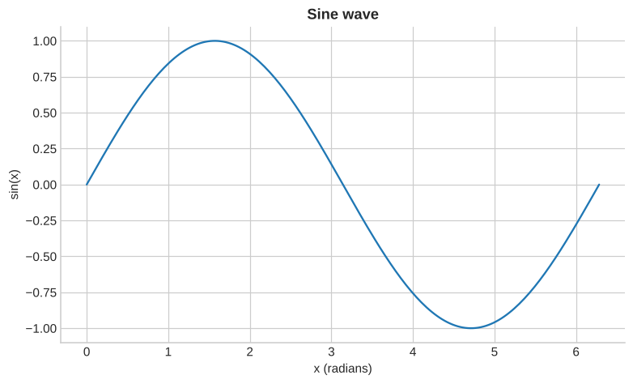
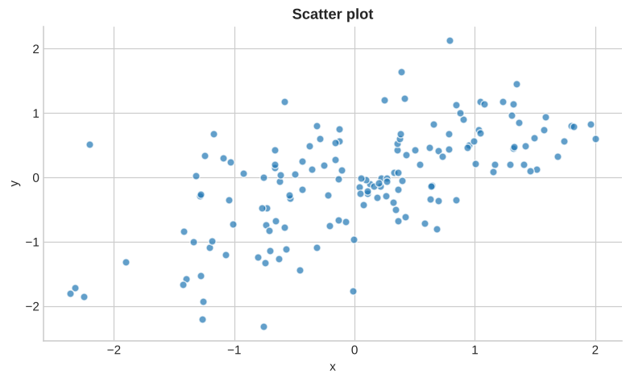
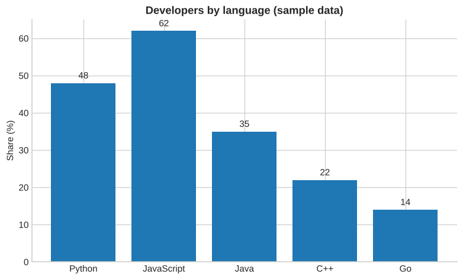
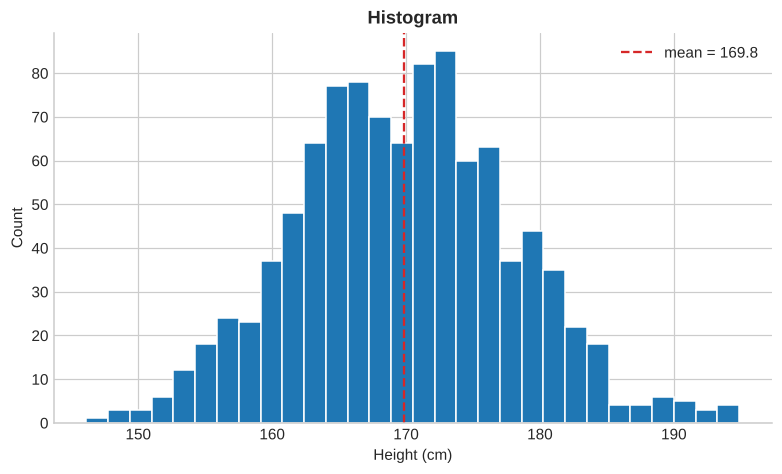
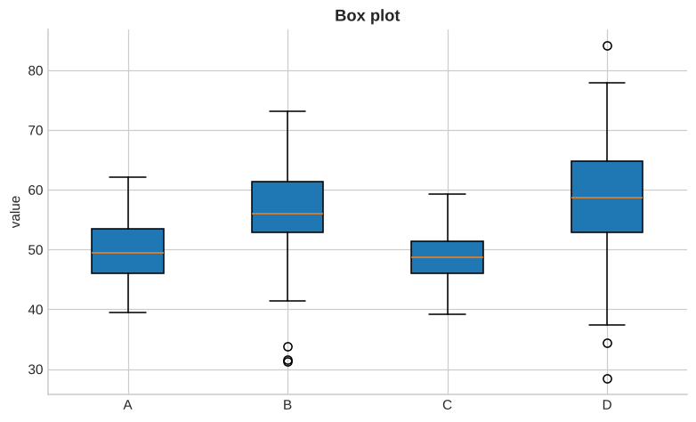
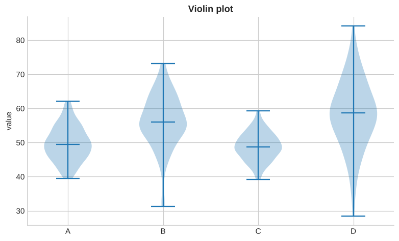

📚
FocusFlow — Study Planner
A study planner web app with task management, a Pomodoro focus timer, and a weekly progress chart. Built with HTML, CSS, and JavaScript.
View on GitHub →Welcome to my portfolio
CSE Student @ Southeast University · Aspiring Data Scientist · Python · AI · ML · Generative AI Research
I am a Computer Science & Engineering student at Southeast University, Dhaka, Bangladesh, passionate about Data Science, Python, and Artificial Intelligence. I enjoy turning raw data into clear stories — cleaning messy datasets, finding patterns, and presenting insights with beautiful charts.
My final-year research (CSE 460, FYDP-I) studies the impact of Generative AI on the creativity and performance levels of students — a quantitative survey study where I designed the questionnaire, ran a pilot survey of 100 students, and analyzed the responses.
Machine Learning fundamentals, SQL for data analysis, and advanced Pandas workflows.
A study planner web app with task management, a Pomodoro focus timer, and a weekly progress chart. Built with HTML, CSS, and JavaScript.
View on GitHub →An interactive quiz app with 24 questions in 3 categories (Python Basics, NumPy & Pandas, Data Visualization), a per-question timer, explanations, and best-score tracking.
View on GitHub →A BDT income & expense tracker with category charts and month filtering — a small personal-finance data tool that runs fully offline.
View on GitHub →Advanced Algorithm research poster: an efficient improvement of the Bellman-Ford shortest-path algorithm using the Yen-BF technique, with a verified case study.
View on GitHub →NumPy in 50 Examples — my hands-on collection of 50 NumPy examples with 8 runnable Python scripts and a Jupyter notebook. It covers everything from creating arrays to linear algebra, statistics, and random simulations — the foundation of all my data work.
Data Visualization in 50 Examples (Matplotlib) — 50 chart examples with full code and a gallery: line plots, scatter plots, bar charts, histograms, box plots, violin plots, and more. A few favorites:






Data analysis is at the heart of my research. For my FYDP-I study on Generative AI and students, I designed a 17-question survey, collected pilot responses from 100 students, and analyzed which AI tools students use (ChatGPT 88%, Gemini 56%, Claude 40%…) and how usage relates to their creativity and academic performance.
Survey design & data collection
Missing values, coding, validation
Frequencies, correlations, comparisons
Charts that make patterns obvious
Insights, limits & honest reporting
CSE Student @ Southeast University | Aspiring Data Scientist | Python · AI · ML | Generative AI Research
I am open to internships, research collaboration, and data projects. Feel free to reach out by email!